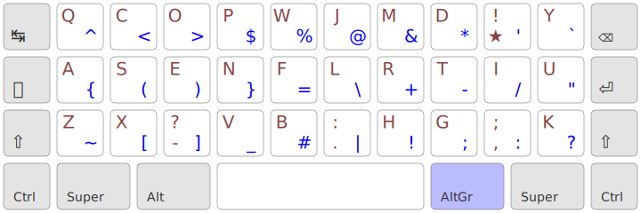

Une disposition de clavier « mobile first » :
- toutes les lettres, mêmes accentuées, se font dans le pavé alpha de
3×10 touches ;
- tous les symboles de programmation peuvent se faire dans le pavé alpha,
via une couche AltGr optimisée pour l’enchaînement des symboles ;
- compatible avec tous les claviers,
même les plus compacts ;
- limite les extensions de doigts,
même sur les claviers standard.